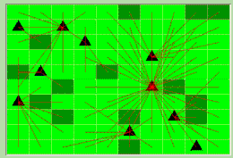

|
Theoretical models
 The Cormas theoretical models are treating the question of natural resources management in an abstract way. Even when real situations may have inspired them, they are not pretending to represent them. [AgentsJeux] : tragedy of the commons and prisoners dilemna (Francois Bousquet and Christophe Le Page). [BrouteLaForet] : spatial representations and interactions between individuals, space and society (Jean-Luc Bonnefoy). [Conway] : the game of life (Francois Bousquet and Christophe Le Page). [Dps] : spatialized prisoners dilemna (Christophe Le Page and Francois Bousquet). [Dricol] : emergence of resource-sharing conventions (Olivier Thébaud and Bruno Locatelli). [Ecec] : evolution of cooperation in an ecological context, a model from Pepper and Smuts (Christophe Le Page). [FauconColombe] : game theory and prey-predator model (Marion Valeix). [ForPast] : spatial transformations dynamics of sylvopastoral systems (Sylvie Lardon and Pierre Bommel). [Potlatch] : economic exchanges and emerging organizations (Juliette Rouchier). [SeaLab] : homing-like reproductive strategies (Christophe Le Page). [SIS] : Epidemiology system of Susceptible - Infectious (Bruno Bonté). [Spiders] : net building by social spiders, a model from Bourjot and Chevrier (Christophe Le Page). [SugarScape] : the famous Epstein and Axtell model (Francois Bousquet). [WolfSheep Predation] : Population dynamics between preys and predators (Moira Zellner et Pierre Bommel).
|
|